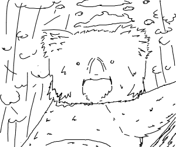

latin name for Koalas is Phascolarctos cinereus ("ash- colored pouch bear")
Koalas live in Australia
*(0)* Koala Facts *(0)*
Koalas are great. They have fluffy ears and are like teddy bears, only they come with a heart <3.
Koalas live in Australia. They are actually more closely related to
the Kangaroo than bears (they have pouches). They eat a lot of
Eucalptus plants. They were discovered by Europeans over 200
years ago, and there are records of them being called names like
"koolewong", "colo", "koolah", and "boorabee".
Interestingly, koalas have one of the smallest brains in proportion
to their body weight. They usually live a solitary life in trees,
sleeping up to 18 hours a day.
CSE154 Koalas Art Gallery!

Photo images and koala illustrations cited in page source